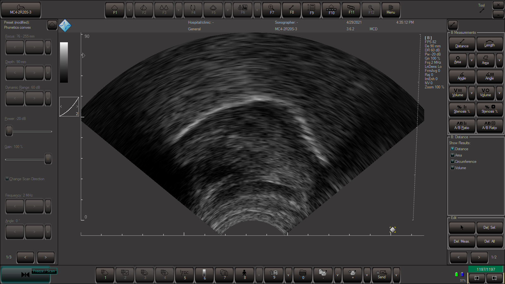

Resources at the UCLA Phonetics Lab
Palatography
How to do Static Palatography
Static palatography is a well-known traditional method of obtaining articulatory data. It is a low-tech, inexpensive tool that can be easily used in the field for phonetic description, both qualitative and quantitative. It records contact with one, sometimes two, articulatory surfaces. A palatogram is a record of contact on the palate. A linguogram is a record of contact by the tongue. Less common is the dentogram, labiogram, gingogram, ad lib. The basic principle is that an articulator either deposits dark material onto, or wipes it off of, the contacted surface.
The method presented here is what is currently used here at the UCLA Phonetics Lab. It is a much improved process developed from an earlier method that had many drawbacks. The previous way of doing palatography involved chocolate powder dusted onto the surface of the palate, creating both a palatogram and linguogram at the same time. While the present method requires that the palatogram and linguogram be created separately, it is much less messy and creates high-contrast images that photograph well. Also, the absence of chocolate powder in the current method eliminates the possibility of increased salivation which decreased the contrast of the earlier palatograms.
Material presented here has been adapted from:- Ladefoged, P. (2003). Phonetic Data Analysis. Oxford: Blackwells. (due out summer 2003)
- Anderson, V. (2000) Giving Weight to Phonetic Principles: The Case of Place of Articulation in Western Arrente. UCLA Ph.D. dissertation.
- Keating, P. (2002). Class Handout for Linguistics 251 Phonetics Seminar, Spring 2002.
Web Page originally designed and implemented by Victoria Anderson in connection with her Ph.D. dissertation. Updated and Revised Summer 2002 by:
- Katya Pertsova
last updated July 2003
A palatogram is an image of the region of the upper surface of the vocal tract contacted by the tongue due to a consonant. The best way to obtain such an image is to coat the tongue with a mixture of equal parts olive oil and activated charcoal powder and record the resulting transfer of pigment.
The process is as follows:- To protect the subject, one should use latex type gloves and preferably a surgical mask.
- Mix the olive oil and the activated charcoal powder.
- Apply mixture to the speaker's whole tongue with a paintbrush or Q-Tip. NOTE: In case of dripping, one should cover the speaker's clothes before applying the mixture.
- Ask the speaker to produce a word that contains the target sound (The word should not include any other sounds that make contact with the palate).
- Use a mirror (preferably a sterilized inter-oral mirror), and place it inside the speaker's mouth at a 45° angle with respect to the plane of the teeth.
- Use a camera or video camera to photograph the mirror's reflection of the place of articulation depicted by the imprint.
- If a video camera is used, the image can be transferred directly to a computer for further processing
- Once the image has been recorded, have the speaker rinse out his/her mouth with lemonade (or lemon juice in water).

When all the required pictures of the roof of the mouth have been obtained, the procedure can be reversed to produce linguograms, which are simply records of the areas of the tongue that have come in contact with the roof of the mouth.
The process is as follows:- Paint the upper surface of the mouth with the same mixture described in the palatography section.
- Have the speaker produce the desired sound and observe (and photograph) the part of the tongue that is making the contact.
- ↳ It may be necessary to instruct the speaker to move the tongue up, down or to the side, to show sublaminal contact, or contact on the sides of the tongue.
- Once you have finished taking the pictures, have the speaker rinse out their mouths with lemonade or lemon juice.

NOTE: Speakers' tongues differ in their absorbency to the charcoal mixture. For speakers whose tongues begin to collect black color despite repeated rinsings, it is preferable to begin by painting the roof of the mouth and obtaining the linguograms first, since repeatedly painting the tongue can cause loss of contrast.
Palatograms and linguograms should always be accompanied by diagrams showing the shape of that particular speaker's mouth in the form of a traditional sagittal section. Diagrams of this kind can be based on dental impressions of the oral cavity made in the field. Use chromatic dental alginate (such as Jel-Trate) as the impression material. Other substances which set harder and cannot be cut are of no use. There is no reason for these impressions to be made using a tray of the kind that dentists use, which takes an impression of the outer surfaces of the teeth. The outer surfaces of the teeth play no role in the production of speech, so they can be neglected. All that is needed is an impression of the inner surfaces of the teeth and roof of the mouth.
The following is one possible process to making the impressions:- Mix the Jel-Trate with water in a bowl using a spatula.
- ↳Don't use when it's still runny. You must be able to pile the mixture. If it runs out the sides, you won't get the whole palate and it could be unpleasant for the subject.
- Heap the mixture on a mirror or other flat surface, or in an appropriately sized dental tray.
- Have the subject lean forward, so that if the material does run out, it will not be swallowed.
- Insert the mixture into the mouth, press up against the palate and teeth.
- ↳You want to push up until you feel the bottom of the impression material to be on the plane of the teeth.
- Hold in this position until set (by color change, if you are using color phase dental alginate, or by timing+touch).
- Remove the tray from the person's mouth and remove the impression from the mirror/tray. (Fig. 5)
- Trim the base of the impression so that it is flat and in line with the plane of the teeth. If necessary, trim the excess from the back and sides. (Fig. 6)
- If you need to store the impression, you can wrap it in a wet, moist paper towel.

In order to obtain a precise diagram of the shape of the speaker's palate, the palatal impression must be accurately sectioned in three dimensions. The first cut will be through the center of the impression to provide an datum line for further measurement. To get the most information on the shape of the soft tissues, the impression should be cut mid-sagittally before trimming around the teeth (Fig.7). Next trace an outline of the palate, upper teeth, and upper lip on a sheet of paper (Fig. 8). Use a ruler and your fingers to brace the impression (Fig. 9). Alternatively, put one of the halves on the glass of a copy machine, and copy. Either way, make several copies of the tracing just in case.
Next, bisect the impression halves in the coronal plane, at a point about the middle of the impression (usually between the second premolar and first molar). The intersection of these mid-sagittal and coronal cuts can be used to define x and y axes and an origin on a piece of graph paper.
Tomographic Slices
Slice each of the resulting quadrants horizontally, 5 mm above the plane of the teeth (i.e. with the blade of the knife parallel to the surface of the impression material corresponding to the plane of the teeth). It is then possible to measure the distance of this plane from the roof of the mouth, and to draw a line round it.
In order to assist with the scaling it is also advisable to draw round the base of the teeth. Check with your local biology or physical anthropology departments for a tomograph with which to make the 5 mm horizontal slices. Otherwise, it is relatively easy to make a tool to cut the alginate mold parallel to the plane of the teeth. On a flat, smooth, 190 x 125 mm wooden board paste heavy cardboard strips parallel to each other, 70 mm apart, resulting in a two “walls” of height 5mm. On top of, and perpendicular to the cardboard walls place an 80 mm long razor blade, creating a wide slicing area. Push each quadrant of the dental impression through this tool so as to cut off the bottom 5 mm of impression material in the occlusal plane. Place the quadrants back together at the origin on the graph paper, trace them, and repeat the process until all of the impression material is drawn in this way.
Alternatively, you can use a cast to get the contour lines: fill the cast with liquid to depths of 5, 10, and 15 mm, photographing each depth.Superimposing on Photographs
To superimpose the contour lines and the marks of the teeth accurately on the photograph, it is first necessary to be certain that the photographs are not distorted. They will be foreshortened, if the mirror was not at a 45° angle to the plane of the teeth. The scaling can be done quite easily if the photograph has been entered into a computer, either by scanning it, or by conversion from the video. The contour lines, location of the teeth and the tracing of the sagittal section can also be scanned in, and then the image of the roof of the mouth scaled independently in each direction so that obvious landmarks, such as the distance between certain teeth are adjusted appropriately.
For a detailed illustration of this process please refer to Ladefoged's chapter on static palatography in his 2003 book, Phonetic Data Analysis.
There are some practical points in connection with palatography that should be noted. Firstly, care should be taken in selecting appropriate words. We are often interested in comparing the places of articulation of different sounds. Accordingly words must be chosen that contain these articulations, and do not contain any other similar articulations that might overlap with them. Thus when investigating the difference between s and sh in English one should use words such as "sop-shop" rather than "sot-shot." Similarly one should use either a range of vowels ("seep-sheep, sip-ship, same-shame, Sam-sham, sop-shop, etc.") or, if this is not possible, just open vowels which might be expected to have less effect on the consonant articulation. As with all instrumental phonetic investigations, time spent selecting suitable words is a good investment.
When doing palatography, one should allow the speaker to practice the task extensively. It is important to get the speakers to relax after the tongue or upper surface of the mouth have been painted, so that when they say the word being investigated they do so naturally. It also requires practice to stick the tongue out of the mouth the same way every time. It is obviously important to date and label the photographs as soon as they are taken. In addition, again as with all instrumental data, it is preferable to make records of several different speakers saying a few utterances rather than one or two speakers repeating a large number of different utterances. Ideally one would like to get a dozen speakers of the same dialect each repeating a dozen times all the contrasts to be investigated. But making palatographic records is fairly time consuming, and in a world in which time and effort are limited one may have to be satisfied with half a dozen speakers saying each word once. We hope, however that gone are the days when phoneticians such as Ladefoged made general statements about some West African languages based on the palatographic records of a single speaker of each language. We need to find out the properties of the language that a group of speakers have in common, rather than the details of an individual's pronunciation.
Aerodynamics
1. Recording air pressure and airflow
The UCLA Phonetics Lab has equipment to record the airflow from the mouth and nose. In addition, it can record the pressure of the air in the front of the mouth and in the pharynx. The system is illustrated in Figure 1. It consists of a data acquisition system (small box at the bottom left of the picture) connected to a laptop or desktop computer (bottom right), and an assembly with oral and nasal masks and pressure tubes held by the speaker, together with a microphone that records the sound.At the UCLA Phonetics Lab, we have the equipment shown in Figure 1 (oral and nasal masks, analysis box, and tubing), as well as a Rothenberg mask.Any of these masks can also be used with the 4-channel CSL box, but this set-up will not be discussed here.
The mask for capturing the oral airflow fits around the mouth and below the jaw. The nasal airflow mask is fastened over the nose by a band that goes around the head. Both masks are joined to the assembly by small tubes. The masks can be used either together or independently (though the oral airflow apparatus must be present, over the mouth or not, in any set-up, since it contains the pressure transducers).
2. Setting up the assembly
Some notes on connecting the assembly:- Make sure the tubes for pressure and flow are placed over the corresponding pressure and flow ports.
- The nasal mask has only one tube. This should be placed over the flow port. (There is no nasal pressure to be measured.)
3. Using the airflow equipment
Recording the airflow:While talking, press the masks firmly against the face, making sure that there are no leaks.
- To record the pressure of the air in the mouth, hold a small tube between the lips while speaking. (If the tube is small enough it will not interfere too much with speaking.)
- The pressure of the air behind a velar closure can be measured using a small tube passed through the nose, with its open end in the pharynx. However, this will not be discussed here.
- When recording air pressure in the mouth, it is important to keep the tubes free of saliva. The tubes should be blown clear at frequent intervals.
- If you want to record the changes in pressure and flow that occur as a result of the vibrations of the vocal folds, you will need to use tubes with an internal diameter of at least 2 mm.
4. Analyzing the Data
The data can be analyzed using the Macquirer or PCquirer software (or CSL).If the acquisition box is connected to a computer running Macquirer or PCquirer, the program will automatically display the data, as shown in Figure 2.
Figure 2 has three records made of "He paid the price ", with the emphasis on the second word.
- The top display (Audio) is the record produced by the microphone. The sound is a little distorted due to muffling from the mask, but it shows the number of syllables and which ones are relatively weaker or stronger.
- The second display (Oral flow) shows the bursts of air due to the aspiration of stops.It also shows variations in flow due to vocal fold vibration.
- The third display (Oral pressure) shows the increase in the pressure of the air in the mouth for each of the stops. It also show the variations in pressure associated with vocal fold vibration.
5. Measuring air pressure and airflow
To quantify the differences between sentences, we can measure the airflow and pressure data using scales such as those shown on the y-axes in Figure 2.The unit for airflow is milliliters per second (ml/s), and the unit for pressure is centimeters of water (cm H2O).
Flow is measured in terms of the volume of air that passes a given point in a second (ml/s). To make sure that your data is measured in standard units (ml/s or cm H2O, rather than in the volts that the transducers actually measure), it is necessary to calibrate the equipment (especially if the equipment has been recently moved). Calibrating the rate of flow requires an apparatus like the one shown in Figure 3. A fan produces a steady stream of air that flows through the mask and then on through a special flow calibration tube.The tube contains a ball that is blown higher in the tube as the flow is increased.In the UCLA Phonetics Lab, this apparatus is part of a wooden calibration box stored with the aerodynamics equipment, as shown in Figure 3.
Pressure is measured as the force required to raise or lower the height of a column of water by a certain amount. In terms of oral air pressure, this corresponds to how much effort you would have to use to blow bubbles out of a tube immersed in water.
To ensure standard units, the system can be calibrated with the U-tube shown in Figure 4. When the tap is open, the tube can be filled with water to the zero level, with the water level reaching the same height in both branches. The figure shows what happens when the tap is closed and pressure is applied by pushing the syringe down. In this case the level has gone up by 5 cm on the one side and gone down by 5 cm on the other side, so that the pressure being applied is 10 cm H2O.This apparatus is also found on the wooden calibration box in the UCLA Phonetics Lab.
The information on this page has been adapted from the forthcoming book, Phonetic Data Analysis: An introduction to phonetic fieldwork and instrumental techniques by Peter Ladefoged. For more information on aerodynamic techniques, refer to this book.
This page was created by Rebecca Scarborough and Christina Esposito. Last updated June 2003
Electroglottograph (EGG)
Introduction
An electroglottograph (EGG) is a non-invasive device that indexes the contact area between the two vocal folds. A small, high-frequency current is passed between two electrodes that are secured around the neck at the level of the larynx. The opening and closing of the vocal folds causes variation in the electrical resistance of the current. These changes in resistance are then displayed onscreen.
How an EGG works
While human tissue is a fairly good conductor of electricity, air is not. During phonation, the vocal folds (human tissue) are, at times, separated by the glottis (air). As the vocal folds move apart, the glottis opens, thereby increasing the electrical impedance across the larynx. When the vocal folds come closer together, the size of the glottis decreases, thereby decreasing the electrical impedance across the larynx. These changes in impedance are then displayed in a signal onscreen.
How to use an EGG
The lab is equipped with a two-channel electroglottograph (Model EG2, Glottal Enterprises). The instructions given below are based on instructions prepared by Glottal Enterprises, but with additional steps and helpful hints.
Here is what the front panel of the EGG looks like:Selecting the signal
Select one of the four signals, described below, using the “Output Signal” (knob #4 in Figure 1).
- VFCA (Vocal Fold Contact Area)
- IVFCA (Inverse Vocal Fold Contact Area) The VFCA and IVFCA are the most common EGG signals.
- DEGG (Differentiated EGG) - This output represents the differentiated EGG signal, in VFCA polarity.
- Ext LF (Extended Low Frequency response) - This output allows you to observe the lower frequency components of the laryngeal movement.
In addition, you can also manipulate the low frequency limit (#3). According to Glottal Enterprises “the higher cutoff frequencies (10 Hz to 40 Hz) will allow the display to be better stabilized [but].... a slight waveform distortion...” will occur.
Setting up the EGG
- Insert the electrodes into the port labeled “ELECTRODES” (#2) on the EGG. Connect the EGG box to the A/D device - usually the XAudio box (connected to the computer), but sometimes in the field a laptop sound card.
- Turn the EGG on by turning the battery knob (#1) to either “A” or “B”, depending on which battery is currently charged. (If you select battery “A”, then “B” is being charged, or vice versa.) The light above the battery knob should now be green. If it is red, the battery you selected is not fully charged; in that case, just select the other battery. Even if the unit is plugged in, you must select a battery.
- Cover the gold surface of the electrodes with a thin layer of electrode gel. A Q-tip works well for this. (If the gel is not available, a saline solution can be used to wet the electrodes.)
- Place the electrodes on the subject's neck at the level of the thyroid cartilage. (According to the directions from Glottal Enterprises, the left electrode (from the subject's point of view) is the one with the black band of wires, though we found that it does not matter.) The white gap separating the gold-plated areas on the electrodes should be roughly horizontal, not vertical.
- Make sure that the electrodes are positioned at the correct distance apart (on either side of the thyroid cartilage) for your subject.
- Now that the electrodes are attached, you will need to make sure that they are in the correct positions. While having the subject produce a constant, prolonged vowel sound, in the pitch range to be tested, adjust the vertical position of the electrodes, so that the center green light on the “Electrode Placement/Laryngeal Movement” (#5) indicator is lit. If the electrodes are not in the right place, the bar will indicate whether you should move up or down.
- The subject should try to produce a strong enough signal so that one of the green lights on the “Signal” indicator (#7) is lit.
Note: The indicator is very sensitive, and small changes in movement cause large changes on the indicator. I found that one (slightly) easier way to center the indicator was to start at an extreme point (e.g., the base of the neck), and then SLOWLY move upwards until the center green light is lit. I also found that positioning the electrodes was much easier to do on myself than on a subject. Remember that changes in pitch will change the position of the larynx, so it is important to keep this factor constant.
Using PCQuirer for the EGG
- PCQuirerX, usually used to record from the EGG, has a very helpful feature - Scope Mode. You can find this under Record/Play > Scope Mode. Scope Mode will allow you to adjust the settings of the hardware, as well as the software settings (found under Options > Record/Play), before you actually begin the recording. Select Scope Mode and have the subject produce a constant prolonged vowel. You should see the signal in Channel 1. In this mode, you can manipulate the gain - either on the EGG itself (#6), or in PCQuirer under Options > Record/Play.
- To record the EGG session, select Record under Record/Play (not in Scope Mode). If possible, have your subject begin the vowel before you actually start the recording. This produces a better recording.
- To make an audio recording along with the EGG recording, use a microphone linked to the EGG via the interface box. You can change the gain in PCQuirer under Options> Record/Play. This option can be manipulated in Scope Mode.
Note about the version of PCQuirer for use with the EGG:
If you change any settings (such as gain, recording time, bandwidth, etc.), the EGG version of PCQuirer will save the changes you made, even after you exit the program. So, it is important to check most of the major settings before you begin recording. For example, if the person who used the EGG last made a recording that was 1 minute long, and you make a recording without checking the settings, your recording will have to be exactly 1 minute long, since there is no way to end the recording early.
Cleaning the equipment
When you are finished using the EGG, you should clean off the electrodes with an alcohol-wipe.
Understanding the EGG Signal
The EGG signal in the VFCA mode is an indicator of vocal fold contact area. The top portion of the signal reflects closing of the vocal folds, while the bottom portion reflects opening. The reverse is true in the IVFCA mode.
This webpage was created by Christina Esposito, with help from the EGG class (Fall, 2003).
EggWorks:
A free program by Henry Tehrani, created for the NSF Voice project to analyze EGG signals (closing quotients, peak increase in contact) -- unfortunately, as of April 1 2022 this program will be unavailable for public use - we hope only temporarily.
Note that files to be analyzed should generally be under 5 min. long.
Electromagnetic Articulography (EMA)
How it works (Principles)
Each of the three transmitters fixed on the helmet produces an alternating magnetic field at different frequencies. The positions of the transmitters form an equilateral triangle whose sides limit the measurement plane of the Articulograph AG100. The alternating magnetic field induces an alternating current in the sensors, much like in a transformer and allows one to obtain the distances of each sensor from the three transmitters. It is then possible to calculate the XY coordinates and measure, store and display the positions of the 5 (up to 15) sensors.
- UCLA Homemade manual for more details.
- Mark Hasegawa-Johnson's report on the Electromagnetic Exposure Safety of the Carstens Articulograph AG100
STEP 0: Sterilization and Disinfection
Sterilize and disinfect materials (sensor coils and tweezers) by using Cavicide (can be bought from Amazon).
Immerse sensors and tweezers following instructions for STERILIZATION
Less than sterilization is possible, but not usually used here: immersion in glutaraldehyde for a minimum of
20 minutes for HIGH LEVEL DISINFECTION; immersion in ethyl alcohol (75 ~90%) for 20 minutes followed by wiping
with Povidone-Iodine can be used for disinfection only (not for sterilization).
Relevant Definitions (source: Classes Of Disinfectants And Their Uses)
- Antiseptic: An agent that can be used to reduce the microbial population found on skin.
- Disinfectant: An agent that will destroy many of the disease-causing microorganisms present on the surface of an inanimate object.
- Sterilant: An agent that destroys all microbial organisms including heat-resistant bacterial spores. Sterilization can be achieved by boiling, autoclaving or exposure to toxic chemicals. Solutions that contain chlorine or glutaraldehyde are frequently used as chemical sterilants.
STEP 1: Warming-Up
The system must be turned on at least two hours before the actual experiment, in order to allow the coils to warm up and reach a stable temperature. Once the computer and the EMA system are on, it is necessary to start the Art program for the warm-up procedure to begin (after Art starts, you can exit the program and use the computer for other purposes). See the Carstens website and the UCLA homemade manual for details on Art.
STEP 2: Coating Sensors
Dip the sensors into Plasty-Late (modelers plastic) to coat them. This step protects the sensors by facilitating adhesive removal after the session and also helps keep them clean. (It is also fine to dip the wire about 1-3 inches into Plasty-Late). The solution is milky when wet but transparent when dry.
STEP 3: Attaching Silk Cloth
(Optional but Recommended) Attach the sensors to small circles or squares of silk cloth right after dipping them in the plastic coating (so the cloth sticks to the sensor). (See Figure (3) below.) As can be seen in Figure (4), the cloth expands the surface of the sensor coil that is attached to the tongue and consequently helps preventing the sensors from falling off. This step is only recommended for coils that will be attached to the tongue.
STEP 4: Drying the Plastic Coating
It is important to leave the plastic coating to dry for at least 2 hours (the longer the better - as a general rule, we leave the coating dry for one night), at which point the sensors can be calibrated in the magnetic field. Insufficient drying may cause the coating to be broken more easily, which results in the sensors' falling off.
STEP 5: Positioning the helmet
The helmet which generates the field is positioned around the subject's head. Since the helmet is rather heavy, it is
suspended from a pulley, in order to alleviate some of the weight.
- We have found that by placing the sensors before putting on the helmet, the subject has some time to adjust to having the sensors attached, and also does not have to sit so long with the heavy helmet on.
- However, a drawback may be that one cannot check if the attached sensor coils are correctly detected in the magnetic field during the attachment session.
- Experienced experimenters may find it more efficient to place the sensors before putting on the helmet, especially when the speech material to be recorded is relatively long. In such a case, examine carefully whether sensors responds to the system constantly as the lead at the coil base out is gently twisted around. This is usually done when sensors are calibrated.
STEP 6: Placing the sensors
A. Calibration Procedures
It is essential to perform a calibration of the system before each experiment.
Please go to our UCLA Homemade EMA Manual for detailed Calibration Procedures.
B. Materials for Attachment
In order to place the sensors, several materials should be prepared.
Adhesives
- For internal use (inside the mouth): dental adhesive, formerly Cyano-Veneer® Fast, now a PeriAcryl cyanoacrylate dental formulation tissue adhesive from Gluestitch.com, but we note that Haskins uses Ketac-Bond cavity liner
- For external use (outside the mouth): skin adhesive, formerly Skin-Bond® by Smith and Nephew, now a liquid bonding cement ordered from Amazon, but we note that Haskins uses Iso-dent from Ellman International
- The reversal tweezers help in holding the sensor coil with precision and not dropping it. Reversal tweezers can be ordered from a surgical supplies store.
Medical Tape
- To affix sensor coils to the face and lips (instead of using Skin-bond).
- To tape the leads to the cheek so that they don't get pulled off.
- To wipe the tongue in order to dry the tongue surface (we found that using cotton pads is better than using gauze).
- To put a dot on the point of the tongue to which the sensor coil is attached.
- To dry the tongue tissue thoroughly. It is important to use a dryer with a "cold lock" option.
C. Attachment Procedures
It is recommended that two experimenters conduct the attachment session.
- Hold the sensor coils (Reversal Tweezers) -- Experimenter 1.
- Thoroughly dry the area to which the sensor coil is to be attached with a cotton gauze pad. (Cotton Gauze Pad) -- Experimenter 2
- (Optional) Put a dot on the spot of the tongue to which the sensor coil is to be attached. (Cosmetic Pencil) -- Experimenter 1
- Apply a drop of the internal adhesive to the surface of the silk cloth (on the sensor coil) (Cyano-Veneer) -- Experimenter 2
- Wipe out the surface of the tongue quickly (New Cotton Gauze Pad) -- Experimenter 1
- Place the coil -- Experimenter 1 [Steps 4-6 must be done almost simultaneously]
- Release the tweezers immediately. (It is important to release the tweezers immediately after the attachment in order to prevent the tweezers tips from sticking to the coil.) -- Experimenter 1
- Dry the surface around the coil using a hair-dryer for about two minutes -- Experimenter 2. Experimenter 2 must start drying the subject's tongue (using cold air) from the moment in which the coil is attached. This procedure helps the sensor coils to stick to the surface of the tongue longer. (For a short data collection session, this step can be omitted.)
- While the tongue is being dried, press the top of the coil with the tip of the tweezers for at least 30 seconds, starting immediately after the coil is attached (remove the tweezers periodically, to make sure that they did not stick to the coil). Of course, during this and the previous step the subject's tongue should remain in a position in which the coil is accessible/visible. -- Experimenter 1
- Stabilize the fine lead wire with a strip of medical tape on the cheek. (These wires must be led out via the corner of the mouth and across the cheek).
- While their tongue is being dried, subjects tend to drool. Thus, it is a good idea to provide them with tissues that they can use to dry the lower half of their face. Also, it is a good idea to keep a towel on the subject's lap during the whole attachment procedure, to protect the subject's clothes from glue spillings.
- The procedure described above is recommended when attaching sensors to the tongue as well as the lower gum. If sensors have to be attached to the upper gum, there is typically no need to dry the area with the hair-dryer, even if it is still a good idea to wipe the area with a cotton pad and to press the coil with the tweezers and/or a finger for about 30 seconds. We found that it is very useful if subjects are willing to hold their lips while we are attaching coils to the gum or teeth. If sensors are attached outside the mouth, it is sufficient to attach them using the skin adhesive, and there is no need to dry the surface with the cotton pads and the dryer, nor to press the coils.
- Time to take for attaching sensor coils: From experience, we know that attaching 5 sensors in their positions in the mouth and on the face typically takes about 15 minutes, 10 sensors take about 30 minutes. Subjects may then require additional time to get used to speaking with the sensors.
- Time the coils will typically stay attached: Sensor coils attached in the way described above can stay attached for as long as three hours, if the subject is not constantly speaking. In a data collection session, it is reasonable to expect carefully attached sensors to stay attached for at least one hour.
STEP 7. Recording Reference Points for Data Rotation
The co-ordinate system for the EMA data is determined by the helmet position during the data acquisition.
Therefore, the x (horizontal) and y (vertical) values of sensor pellets, for example, placed on the tongue
do not directly map to the tongue's horizontal and vertical movements.
Thus, the EMA data requires rotation to the occlusal plane.
The occlusal plane (sometimes called "bite plane") is generally determined using a bite plate on which two
sensor pellets are fixed. The figure below is a bite plate we generally use here.
- The width of the bite plate is about 4.5 cm for an average size woman and 5.5 cm for an average size man (exactly the same size as a credit card).
- A new bite plate is made for each subject by laminating a relatively thick paper (at Kinko's, Copy Service, for $1.00-2.00 each).
Procedure
- Fix two pellets as you see in the figure
- Insert it into the subject's mouth
- Record for a few seconds with the bite plate in the subject's mouth (See below how to use this reference for rotation)
STEP 8. Recording Data
- The data is recorded in small segments (called "sweeps"), typically of 1 to 4 sentences (each sweep can hold up to 30 seconds of recorded data). The sweeps contain position information about the sensors, as well as an acoustic record of the session. (The quality of the acoustic recording is poor, so a separate audio recording is necessary if any acoustic analysis must be performed.)
- Unfortunately, if acoustic data are collected, each sweep is played back as Art saves it. Thus, data collection takes approximately twice as long as one might think!
- It is a good idea to design experiments so they can be stopped part way through and still have useful data, just in case that sensors accidentally fall off earlier than expected.
See UCLA Homemade Manual for Performing an Actual Measurement Sweep.
STEP 9. Removing the helmet and the pellets
- While it is more practical to remove the pellets before the helmet, if the subject looks very tired, it is a good idea to first take the helmet off, and to remove the pellets afterwards.
- We do not use special tools to remove the pellets. Subjects typically find it easier to take off the tongue pellets by sliding their tongue under the upper teeth.
STEP 10. Cleaning-Up
- Soak the sensor coils and the coated wires in the adhesive remover solution, "Uni-Solve" by Smith and Nephew (1-800-876-1261), until they look clean (often, we have to leave the coils in the solution overnight).
- Carefully remove the rubber coating from the sensor coils and and wires.
- Sterilize and Disinfect the coils (STEP 0).
- IMPORTANT: We frequently lose (expensive) sensor coils due to broken leads at the coil base. This damage comes primarily from hasty and careless cleaning-up at the end of the session. Soaking sensor coils in Uni-Solve for a while & extremely careful handling can reduce the damage to the coil base.
a. tongue dorsum: approximately 4 cm from tip of tongue, depending on speaker. The exact position may be determined by static palatography if precision is needed
b. midpoint of tongue body
c. tongue tip: approximately 1 cm from tip of tongue
d. base of low front incisors: to measure jaw movement
e. lower lip
f. upper lip
r. bridge of the nose (as a reference point)
r. base of upper front incisors (as a reference point)
Order of coil attachment: Attach coils from the backmost point inside the mouth, approximately from (a) - (f) (however, it is sometimes easier to attach tongue coils starting from the frontmost one); attach reference points last.
Some subjects prefer to have the coils d. and r. attached to their teeth (approximately on the ridge between the front incisors), and this is necessary for subjects whose gums easily bleed. However, we often attach the coils to the gum, instead (under the lower front incisors; over the upper front incisors). An advantage of gum attachment is that the lips hold the coils in place. Furthermore, after coil removal, the glue tends to go away earlier from the gum than from the teeth.
Before using Emalyse to measure position data, several processing steps are needed using the Tailor software. Please refer to Tailor manual.
Filtering (see also the Tailor manual p.7-9)
- Filter_40: this filter is the strongest for smoothing. It is recommended by Carstens to use this filter for fixed reference points. The cut-off frequency is at sample frequency/25. At a sample frequency of 1000 Hz, the cut-off frequency if 40 Hz and the filter offers a 60 dB depression at 90 Hz. (The cut-off frequency, therefore, depends on the sample frequency.) USE THIS FOR SENSORS AT TWO REFERENCE POINTS (UPPER GUMLINE, NOSE BRIDGE.)
- Filter_100: The cut-off frequency is at sample frequency/10. As a sample frequency of 1000 Hz, the cut-off frequency is 100 Hz and the filter offers a 60 dB depression at 150 Hz. USE THIS FOR MOST SENSORS.
- Filter_160: This filter is for weak smoothing of movement signals. The cut-off frequency is at sample frequency/6.25. At a sample frequency of 1000 Hz, the cut-off frequency is 160 Hz and the filter offers a 60 dB depression at 210 Hz.
Dynamic correction for head movement
- The dynamic correction procedure modifies the co-ordinate system individually, sample by sample, in such a way that both reference sensors stay still. This step eliminates the errors caused by helmet movement during the recording session. (from p.9 in the Tailor manual)
Rotation to the occlusal plane
- First, determine carefully by what angle the data needs rotating. This can be determined by using x'(distance between two x points) and y' (distance between two y points) values of two points on the bite plate. The angle is the arctangent of y'/x' (theta = tan-1 y'/x').
- Enter the angle determined in the box provided. This process rotate the entire data.
Restoring 12 bit acoustic data [using Multi-CV]
- The speech processors generate, store and process the acoustic data in the compressed 4-bit ADPCM format. Emalyse can read only this compressed format. Thus, the acoustic data in Emalyse should not be used for any serious acoustic measurement.
- However, the compressed acoustic data can be 'uncompressed' to the 12-BIT PCM format which can be used for serious acoustic measures. Multi-CV allows this conversion. First, open a data file in the Multi-CV, mark "sound-wav" function, choose the sweep numbers you are interested in. Let it run. The 12 bit acoustic data (.wav) will be stored in the folder "Convert" in the same directory in which your original data are.
- we use the EMALYSE software to measure position data.
- Here is an example display from the Emalyse program, showing two Croatian sentences (Kuda Bibi pada, "Where does Bibi fall?" and Kuda Mimi pada, "Where does Mimi fall?"):
*An animation of the articulators in motion, created from EMA data, is also available on the Demos and Illustrations page.
- Attach a small circle/square of silk cloth to the sensor coils right after dipping into "Plasty-late"
- Thoroughly dry the rubber coating (at least 3 hours) before the experiment starts
- Pay extremely careful attention to drying the surface of the tongue right before placing a sensor coil. Make sure that the surface is wiped twice. Drying the tongue is so important that other institutes use a "saliva vacuum" like the one dentists use.
- Gently press the sensor coil against the tongue surface with the tips of the tweezers or a finger for about 30 seconds.
- During the placement procedure, the second experimenter should dry the subject's tongue with a hair-dryer. This helps the glue drying thoroughly. In other institutes, a tiny nozzled air blower like the ones used by dentists is used to blow air on the glued sensor coils.
- Reversal Tweezers makes the coil placement easier, preventing the sensor coils from slipping out.
- It's always a good idea to have two experimenters performing the coil placement. One experimenter holds the coil, quickly wipes the tongue, places the sensor coil, and gently presses the sensor coil against the tongue. The second experimenter wipes the tongue before the placement procedure starts, puts a drop of glue on the silk-surfaced coil, blows the hair-dryer (with cool air).
- While their tongue is being dried, subjects tend to drool. Thus, it is a good idea to provide them with tissues that they can use to dry the lower half of their face. Also, it is a good idea to keep a towel on the subject's lap during the whole attachment procedure, to protect the subject's clothes from glue spillings.
- When attaching the coils to the base of incisors, make sure that the front teeth do not have fillers or any synthetic material that might be destroyed by the glue.
- It is a good idea to design experiments so they can be stopped part way through and still have useful data, just in case sensors accidentally detach earlier than expected.
- Dip the used sensor coils into Uni-Solve at least for several hours so that we can reduce the damage while peeling off the rubber coating. We typically soak them for a day or two to minimize the damage. It is also suggested (Tips and Tricks at Carstens) that the loss of receiver coils due to broken leads at the coil base can be reduced by occasionally dipping the stripped-down coils in Cyano-Veneer up as far as the sleeve of the coils.
Last updated: content 02/18/00 (by Taehong Cho), links Oct. 2017 (Pat Keating)
Ultrasound
Instructions for using the lab's ultrasound facilities are split into two parts.
This page covers the logistics of what you need to set up to collect data or run
in-class demos of speech articulation as well as the human interaction element:
how to adjust the stabilization headset and probe to maximize participant comfort
while ensuring a good view into the oral cavity.
Our hardware consists of the Telemed MicrUs, the Telemed MC4 or MC10 convex probes,
a USB audio interface, and a few connector cables. This page also serves as a guide
to the accompanying software Echo Wave II, a license for which is required for
full functionality of the MicrUs, and gives a brief overview of how to change
settings in the device using the software.
Work stations
Collecting data or running a demo requires a suitable work station. One data acquisition laptop is currently configured to communicate with the ultrasound device. If you would like another device to be configured for collecting ultrasound data, please contact Matt or Henry. If you plan to collect ultrasound data or use the device for an in-class demo, be sure to reserve the ultrasound device and laptop in addition to whatever lab room you need to book.
Software overview
Demos, and some configuration before data collection, are done in Echo Wave II, which
is proprietary software provided by Telemed, the probe manufacturer. This is only
installed on the data collection laptop at the moment.
There are two ways to collect ultrasound data. The Articulate Assistant Advanced (AAA)
software provided with the ultrasound device comes with its
own tutorials. There are
numerous data processing options that are available for data collected and stored using
AAA. However, the data collection process itself is very streamlined and is mainly
designed with SLP clinicians in mind, so it may not work for all experimental designs.
The lab's Python utilities are a good deal more flexible since they are based on the
OpenSesame experiment GUI. OpenSesame is free and open-source, and it has the advantage
of being written in Python (which is also free), which means we can easily define custom
code blocks for communicating with the ultrasound device based on various triggers. A
full tutorial for OpenSesame is beyond the scope of this documentation, but it has a
relatively large user base and a lot of useful online discussion of common issues, as
well as extensive documentation.
Several template OpenSesame experiments can be found here. In OpenSesame, you can
customize these script templates to suit your own needs, either using the GUI or by
directly editing the Python code in various sections. Unfortunately, you will only be
able to run the script on a Windows computer which the ultrasound probes are connected to.
Equipment
To record the ultrasound signal and align it to audio, an exchange of information
between the ultrasound device, a USB audio device, and the computer needs to take
place. Once you've found a suitable workstation, you'll need to set up your hardware
and start the communication between the ultrasound device and the workstation.
For this process you will need these supplies, which are all stored in the camera case.
- Micro unit (small, flat silver box)
- PStretch unit (stubby silver box with black bumpers)
- Scarlett 2i2 USB audio interface
- Three unattached cables: copper-colored and long; red; silver
- One ultrasound probe of your choice
Hardware setup
Hardware setup should take place before headset fitting, since the speaker's presence is not needed and arranging all the materials can be somewhat time consuming. This is documented on the other page and has its own material requirements.
- Connect the Focusrite Scarlett 2i2 ("Scarlett") to your computer using the red USB cable (port is on back of Scarlett).
- Connect your microphone to Scarlett using the XLR port (see picture below).
- Turn on the Scarlett's phantom power by pressing the button next to the XLR port (see picture above). It will light up red when on.
- Connect the PStretch unit (small box with black "bumpers" on either end; see picture below) to the
Scarlett's 1/4" headphone jack using the 1/4" headphone to BNC cable. The BNC end of this cable must
be attached to the PStretch's SYNC OUT port (this is labeled on the back of the device; on the left
in the image below).

- Attach the BNC to mini BNC cable (copper-colored and more like a wire) to the PStretch's SYNC IN port. The larger end of the cable attaches to the PStretch; you will need to twist the cable about 90 degrees clockwise to lock it in into place. The cable we use nowadays is longer than the one in the pictures here.
- Attach the other end of the BNC to mini BNC cable to the Micro's "Frame Strobe" mini BNC port
(pictured below). There is a small hex nut attached to the mini BNC end that you have to tighten by
hand.

- Double-check that all connections to and from the PStretch are to and from the correct ports, as shown below, and all connections are fully "clicked" in. This is important! Most problems with data collection are due to bad connections to or from the PStretch, or due to a loose connection in one of the headphone jacks. If something doesn't look right, review steps 5-7 above.
- Finish making the connections to the laptop: plug the PStretch into another USB port on the computer using
the black USB cable that is attached to the unit. Using the silver mini USB to USB cable, connect the Micro's
mini USB port to another USB port on your computer. Note that you should use the "first" USB connection on
the cable (the one which also has another USB plug coming off of it), which is pointing towards the top of the
image below.
- Finally, take your desired probe out of storage and attach it to the multi-pin socket on the front side of the Micro.
Imaging settings
The imaging settings are adjusted in Echo Wave II. We will generally load preset combinations of settings into Echo Wave II. This is ideally done before you fit the stabilization headset and probe to your speaker.

- Run Echo Wave II with the desired probe connected. This often takes a few seconds to start up.
- Check the settings. Echo Wave II automatically uses the settings that were used in the last session
for that probe, whether or not they were a preset. Four presets are available, two for each of the
two probes. These are available as .dat files stored on the data collection laptop, and which can also
be downloaded here.
- Normal setting: records at 82 frames per second; full field of view. Good for most speech sounds and study questions.
- Large probe (Telemed MC4): telemed-MC4.dat
- Small probe (Telemed MC10): telemed-MC10.dat 
- Faster setting: about 120 frames per second; smaller field of view (60 percent of normal). Best used for flaps, taps, and other similarly quick (sub)segments, or where especially fine temporal detail is needed for other reasons.
- Large probe (Telemed MC4): telemed-MC4-60pct.dat
- Small probe (Telemed MC10): telemed-MC10-60pct.dat
- Depending on your needs, leave the existing preset in place or load a new preset by importing a .dat file. Click the small fan icon in the upper left of the screen (near the probe name in the upper left corner; see image above). The fan icon will produce a drop-down menu when clicked; click "Presets", then "Apply Settings from File" at bottom left.
If needed, you can also create custom imaging settings and save them as a new .dat file. However, the presets generally work well and you will probably not need to reinvent the wheel here.
Probe stabilization
With Echo Wave II open to check the probe position, you will now want to put the stabilization helmet on your speaker, then put the probe into position in the stabilization headset. This process is explained in more detail here. After you are satisfied with your probe placement, you must close Echo Wave II to collect data using the experiment software. Whatever settings you were using here are the ones that will be used during recording, even though Echo Wave II is not open.
Software 2: the experiment script
To start your OpenSesame session, you will need to do the following in order. Before you start you should turn off the device's wifi (which makes the connection to the ultrasound more stable), and make sure that the computer is not scheduled to restart for software updates.
- Open the Anaconda Prompt and type in the following: C:\Users\linguist\Anaconda2\Scripts\opensesame.exe. This will open OpenSesame with the required permissions. Using this command in another terminal will not work.
- A blank experiment loads by default. Open your experiment file of choice. We keep several template experiments in the Box folder here; these can be adapted for your needs.
- Before running the experiment, open the Windows PowerShell and type in: C:\echobserv.200.exe, which starts up the communication between the ultrasound device and the collection laptop's hard drive.
- At this point, run your experiment. A small MATLAB console will appear, showing a live video of the ultrasound signal. You cannot close this window, since it will cut off communication with the ultrasound. Since you will need to use this to monitor the swallow task and bite plate task, we suggest clicking on the double, small green arrow (Run in Window) instead of the large green arrow (Run Full-screen). This will open up a moveable window instead of full-screening the experiment. Once the landmark tasks are done, you should cover the MATLAB window up with the experiment window so that the participant can't see their own articulations.
The experiment template contains code which displays "slides" to the participant for three types of events. You will generally want these to happen in this order:
- Your experiment will probably begin with the swallow task and bite plate task, which we use to get more details on the recording session's physical frame of reference. These each have their own script items which can be repeated a desired number of times. Essentially, each triggers an ultrasound recording that lasts from a starting keypress to an ending keypress, allowing the participant to take as long as needed.
- Slides familiarizing the participant with the study usually occur after the swallow and bite plate tasks. These advance as the participant clicks through.
- Finally, most of the runtime is taken up by a loop which runs experiment blocks a specified number of times. Trials can be randomized. These are again self-paced, with the recording restarting whenever the participant clicks through to indicate they have finished reading the presented item.
We suggest providing a break every 10-20 trials, between blocks. To avoid fatiguing participants, we also don't suggest trying to record more than 500-600 sentence-length trials in total. This takes about 30 minutes depending on the participant's speed, and spending much longer than that in the headset can be fatiguing.
Displaying a live feed of someone's tongue with the ultrasound device is much simpler than doing data collection. The Echo Wave II software is designed for just this task in clinical or diagnostic settings, and the probe usually doesn't need to be stabilized. If Echo Wave II is opened full-screen and projected at the front of the room or shared over Zoom, students can usually make out all the relevant details of lingual articulation.
Setup
- Connect the ultrasound device (the small, silver box) to the laptop using the silver mini-USB to USB cable. You should use the "first" USB plug rather than the second one branching off it. See picture below.
- Select the probe you would like to use and connect it to the multi-pin socket on the other end of the ultrasound device.
- Double-click the Echo Wave II 2.6.2 shortcut on the desktop and allow it to run. Start-up takes a few seconds.
From here, follow the instructions for orienting the probe on yourself or a volunteer speaker, minus the stabilization headset (which is not usually needed for simple demos).
Demo tips
Ultrasound is useful for visualizing lingual articulation but cannot visualize much else. Since the probe will probably not be stabilized, height or degree of constriction will also be hard to eyeball. The most useful demos focus on big, visible articulations, which include:
- Showing what various complex lingual segments look like, such as flaps, taps, /l/, /ɹ/, or other liquids that volunteer speakers might produce. Vibration of the tongue tip in the trill [r] is also often visible in the signal.
- If you are demoing for Ling 103, ultrasound is great for troubleshooting students' production of clicks, as well as retroflex, palatal, uvular, and pharyngeal places of articulation. You can produce these yourself to demonstrate or get a native speaker of a language which has these contrasts (Arabic, Tamil, etc) to volunteer.
- Connected speech is generally fun to watch. Try simply recording yourself while explaining what's going on at a normal speaking rate.
The ultrasound will run continuously unless you hit the "freeze" button, which is in the lower left corner of the screen. Freeze the signal if you are not recording something in motion, or if you need a snapshot of a particular tongue configuration.
X-Ray
from Haskins Labs (1962), posted with their permission:
(note: audio quality is poor in all of these)
Damascan Arabic X-Ray Film (Charles Ferguson, Arthur Abramson, and others) - 2.8 GB
Mandarin Chinese X-Ray Film (Martin, Abramson, and others) - 3.5 GB
Russian X-Ray Film (Whitfield, Abramson, and others) - 2.58 GB
Akan, from Mona Lindau-Webb, posted with her permission:
(note: there is no audio in frontal movies, and audio quality in Xray movies is poor to unintelligible)
Speaker A-female: frontal (380 MB), Xray (386 MB)
Speaker E-male: Xray (452 MB)
Speaker E-female: Xray (320 MB)
Speaker F-male: frontal (645 MB), Xray (436 MB)
Speaker S-male: frontal (361 MB), Xray (382 MB)
Last updated by Pat Keating, Jan. 2012